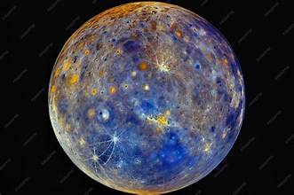
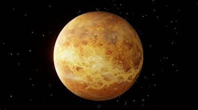
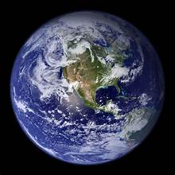
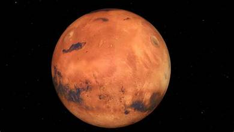
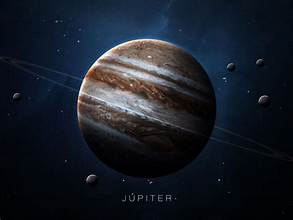
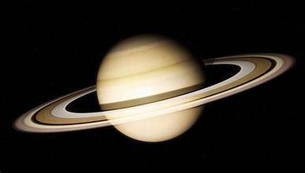
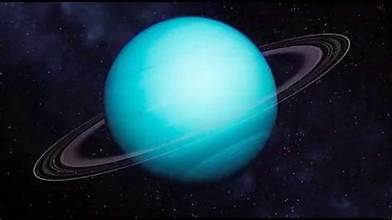
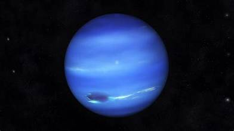

Mercurio
Es el planeta más cercano al Sol y el más pequeño del Sistema Solar. Tiene una superficie rocosa llena de cráteres.
Temperatura: extrema entre día y noche.
Tipo: planeta rocoso.
Ocho planetas, una estrella y millones de cuerpos celestes. Descubre los mundos que orbitan nuestro Sol.

Es el planeta más cercano al Sol y el más pequeño del Sistema Solar. Tiene una superficie rocosa llena de cráteres.
Temperatura: extrema entre día y noche.
Tipo: planeta rocoso.

Es el planeta más caliente del Sistema Solar. Su atmósfera densa provoca un intenso efecto invernadero.
Característica: atmósfera muy densa.
Tipo: planeta rocoso.

Nuestro hogar. Es el único planeta conocido que alberga vida y posee abundante agua líquida en su superficie.
Característica: agua líquida y vida.
Tipo: planeta rocoso.

Conocido como el planeta rojo debido al óxido de hierro de su superficie. Es uno de los principales objetivos de exploración espacial.
Característica: superficie rojiza.
Tipo: planeta rocoso.

Es el planeta más grande del Sistema Solar. Tiene enormes tormentas, entre ellas la Gran Mancha Roja.
Característica: gigante gaseoso.
Lunas: posee numerosas lunas.

Es famoso por su espectacular sistema de anillos, compuesto principalmente por partículas de hielo, roca y polvo.
Característica: grandes anillos.
Tipo: gigante gaseoso.

Es un gigante helado de color azul verdoso. Su eje de rotación está extremadamente inclinado.
Característica: rotación inclinada.
Tipo: gigante helado.

Es el planeta más lejano del Sol. Presenta temperaturas muy bajas y vientos extremadamente rápidos.
Característica: vientos intensos.
Tipo: gigante helado.
Si el Sol desapareciera repentinamente, la Tierra tardaría aproximadamente 8 minutos en dejar de recibir su luz.
La luz necesita tiempo para viajar por el espacio.Descubre las enormes estructuras que forman las galaxias del universo.
Explorar galaxias →